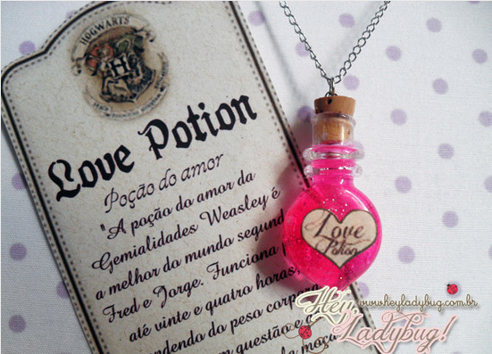
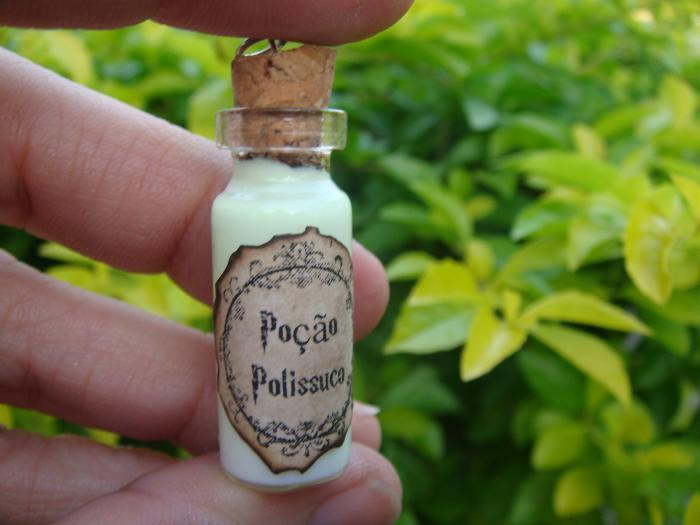
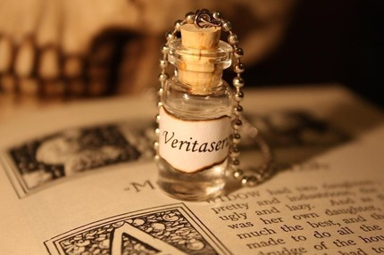
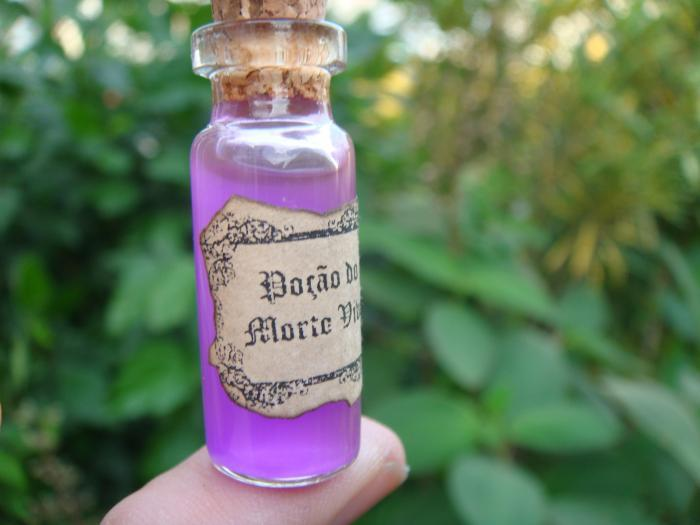

A amortentia é a poção do amor mais poderosa que existe, ela pode ser facilmente identificada pelo brilho perolado, pela fumaça que solta (que sobe em espirais características) e pelo seu cheiro que varia de pessoa para pessoa de acordo com o que mais a atrai. Segundo Horácio Slughorn é a poção mais perigosa que existe, porque pode levar a pessoa que a bebeu a fazer loucuras pela paixão obsessiva. O cheiro dessa poção é a primeira pista definitiva em relação ao fato de Harry gostar de Gina, uma vez que entre outros cheiros Harry sente o cheiro do perfume de Gina, e em outro caso parece mostrar que Hermione sente o cheiro de Rony. Hermione também sente o cheiro de grama recém - cortada, pergaminho novo, pasta dental de menta e...(ela não diz, mas em uma entrevista J.K.Rowling diz que ela sente o cheiro de cabelo de Rony).
Essa poção é conhecida também por "Sorte Liquida". É uma poção que é extremamente (muito mesmo) difícil de preparar e, se produzida corretamente, traz sorte para quem a beber por algum tempo. Apresenta uma cor transparente como aguá, é muito difícil de se fazer, e terrivelmente tóxica se ingerida em grande quantidade, por isso não deve ser usada frequentemente. Os seus sintomas de hiperdosagem vão desde simples tontura, até a loucura, podendo ocasionar a morte. Também é proibido o uso em eventos oficiais e esportivos; e mesmo com todo seu poder, não pode fazer acontecer algo impossível ou quebrar atos contratuais mágicos.
È considerada uma poção complexa. Se for preparada corretamente, essa poção, que leva xarope de hemeróbios e um mês para ficar pronta, transforma quem a bebe em uma réplica perfeita de uma pessoa pré-determinada. Essa pessoa é determinada ao fim do preparo da poção, quando algo da pessoa (fios de cabelo, unhas) é acrescentado a poção. O efeito da poção polissuco dura cerca de uma hora, porém o tempo pode variar dependendo da quantidade de poção consumida.
É a poção da verdade mais forte e perigosa que existe, uma vez que não tem cheiro, sabor e é transparente e bastam apenas três gotas para que todos os segredos da pessoa possam ser revelados, e até Você-Sabe-Quem contaria seus maiores segredos.
Essa é uma poção muito poderosa, que faz a pessoa adormecer por muitas horas. Ela tem o nome de poção "do Morto Vivo" pois a pessoa que tomá-la, fica tão sonolenta que parece mesmo um morto vivo e não consegue fazer nada. O máximo que se possa fazer sob o efeito desta poção é falar durante o sono e pensar que tudo que se passa no sonho é a realidade. Se esta poção for ingerida em grande quantidade pode ser induzida ao sono eterno, justificando o nome.
